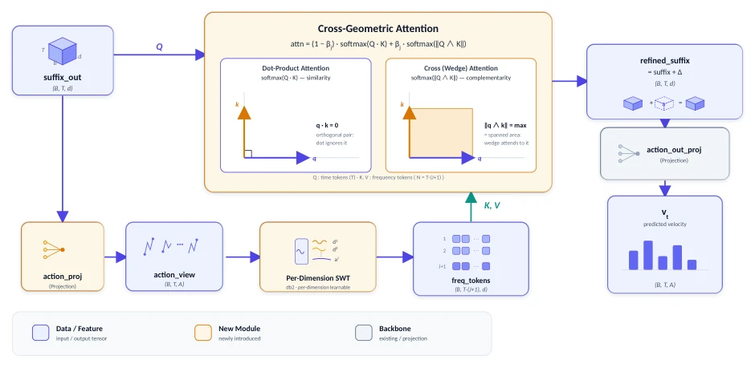
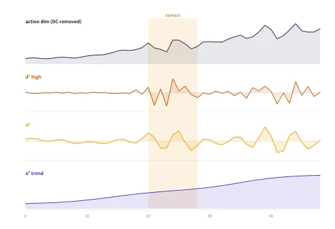

This paper performs a "surgical" repair on Action Chunks, attempting to resolve the "blind spot" of traditional VLA models that treat actions as ordinary sequences. The authors keenly observe that actions contain both smooth trends and high-frequency corrections, as well as a "division of labor" that is nearly orthogonal in vector space across different stages (e.g., grasping, adjustment), whereas standard Dot-product Attention is "blind" to orthogonal relationships and must rely on the network taking a detour to re-encode them. The TFGCA module acts like a clever "external plugin," using wavelet transform to decompose actions into multi-frequency bands, and then employing Wedge Product to specifically capture those orthogonal relationships that dot products cannot handle. Although the theory is compelling, experimental results show limited improvement on the saturated benchmark (LIBERO), with main advantages reflected in out-of-distribution (OOD) and real robots, indicating it indeed enhances robustness but also exposes that it might be "overkill" on simple tasks. However, introducing the wedge product from geometric algebra into VLA is a very cool attempt, at least much more elegant than simply stacking parameters.
Existing block-based prediction VLA models (e.g., π0, π0.5, RDT-1B, ACT), although capable of predicting future action blocks in a single pass, often treat action blocks as unstructured hidden vector sequences, ignoring two key structures inherent in actions. First is the frequency structure: action blocks contain motions at different time scales (e.g., smooth long-range trends and fine contact corrections), where existing models entangle these scales within a single token, lacking explicit multi-scale processing capabilities. Second is the cross-phase geometric relationships: in fine manipulation, motion directions of different stages (e.g., approach, contact, adjustment) are often nearly orthogonal in the representation space (Temporal Orthogonal Division-of-Labor, TO-DoL), whereas dot-product-based attention mechanisms are insensitive to orthogonal vectors and must re-encode these relationships through deep networks, which is inefficient. Additionally, existing frequency domain methods (e.g., FAST using DCT) are mostly used for discrete tokenization or compression, failing to directly utilize multi-resolution features for attention retrieval in continuous flow matching policies. Therefore, a mechanism capable of sensing both multi-scale frequency and orthogonal geometric relationships simultaneously is required to directly capture these key pieces of information ignored by dot products.
TFGCA is a plug-and-play module inserted between the VLA Transformer output and the action head, containing three core stages. The first stage is Action-Space Projection, projecting abstract hidden action tokens into a physically meaningful control space (e.g., joint space or Cartesian increments), and introducing an auxiliary alignment loss to ensure the physical interpretability of the projection. The second stage is Per-Dimension Learnable SWT Tokenization, applying Stationary Wavelet Transform (SWT) to each control dimension, decomposing the time series into multiple frequency bands (Detail bands and Approximation band), preserving sequence length and generating multi-resolution frequency tokens, thereby decoupling trends and corrections. The third stage is Dot-Plus-Wedge Cross-Attention, which is the core innovation. Queries come from time tokens, while Keys/Values come from frequency tokens. Attention scores consist of two parts: Dot Product measures similarity, and Wedge Product measures orthogonality (i.e., the area of the parallelogram spanned by the vectors). These two are fused through learnable weights, enabling the model to attend to both alignment and orthogonal relationships simultaneously. Finally, the module adopts zero-initialized residual connections, ensuring behavior is fully consistent with the baseline at initialization, facilitating fine-tuning on pre-trained models.

Figure 1: TFGCA architecture: a drop-in module between the VLA transformer output and the action head. The frequency branch (action-space projection →per-dimension SWT →frequency tokens) supplies the keys/values for the geometric cross-attention, whose queries are the time tokens; its output is written back residually and passed through the action head to give the velocity vθ. (Blue: data tensors; amber: new modules; gray: backbone.)

Figure 2: A per-dimension SWT (db2) decomposes a single action-dimension sequence (top, DC-removed per dimen- sion) into multi-resolution bands. High-frequency jitter at the contact moment (shaded) concentrates in d(1), while the final approximation a(2) retains the smooth trend—trend and correction are decoupled into different bands.
The paper evaluated TFGCA under four settings: LIBERO (in-distribution), LIBERO-Plus (out-of-distribution perturbation), RoboTwin 2.0 (simulated domain randomization), and AgiBot A2 (real robot). The baseline is π0.5. On LIBERO, TFGCA achieved an average improvement of 1.5%; although the improvement is modest, it demonstrates robustness on saturated tasks. In LIBERO-Plus, facing seven perturbations, TFGCA achieved an overall success rate improvement of 6.3%, performing especially well under noise and robot initialization perturbations. In the domain randomization tests of RoboTwin 2.0, TFGCA performed remarkably, with an average success rate improvement of 28.5%, far surpassing other baselines, proving its zero-shot generalization capability to unseen perturbations. On the real robot AgiBot A2, the overall success rate improved by 11.67 percentage points. Ablation studies show that removing the geometric module (wedge product) had the greatest impact on OOD performance, verifying the importance of orthogonality capture.